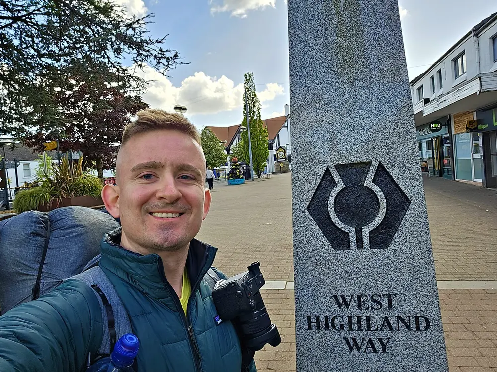
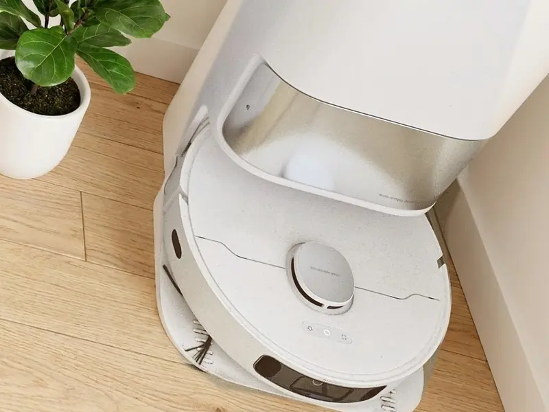

Più tempo per le cose belle.
MYLE è per tutti quelli che sono stanchi di passare il loro prezioso tempo libero tra faccende di casa e fornelli. Qui trovi apparecchi che fanno questo lavoro al posto tuo. Così ti resta più tempo per i tuoi hobby o per una pausa sul divano.
- Breve video esplicativo
- Un consiglio per ogni budget
- Calcolatore: conviene a te?
Novità nelle guideRobot aspirapolvere o aspirapolvere senza fili?Black Friday: come riconoscere una vera offerta
Una giornata con i tuoi apparecchi
Dal primo caffè al fine settimana. Aggiungi al tuo conto del tempo gli apparecchi che ti interessano e guarda quanto fa in un anno.
Al mattino
Caffè, doccia, denti: la giornata inizia rilassata.


Mentre lavori
A casa il lavoro va avanti, solo senza di te.


Dopo il lavoro
Tu metti gli ingredienti, al resto pensano gli apparecchi.


Dopo cena
Anche il riordino lo lasci fare.


La sera
Ora il tempo è tuo.


Nel fine settimana
Quello che resta si fa più facilmente.


Il tuo robot aspirapolvere lavapavimenti può pulire mentre sei al lavoro.
La maggior parte delle persone non lo sa. Imposti una volta sola una programmazione nell’app, per esempio per le ore in cui sei al lavoro, ed è fatta. Quando torni, è tutto aspirato e lavato.
Calcola quanto tempo ti fa risparmiare“Da 14 anni non passo quasi mai l’aspirapolvere da solo. Tornare ogni giorno dal lavoro in una casa appena aspirata e lavata è un enorme salto di qualità della vita.”

Ciao, sono Lukas.
I miei hobby che richiedono molto tempo, come pesi, trekking e alpinismo, mi hanno costretto presto a ottimizzare il mio tempo. E sinceramente non trovo niente di più fastidioso delle faccende di casa e del cucinare.
Così a 18 anni mi sono comprato il mio primo robot aspirapolvere. Allora giravano ancora per casa a caso, eppure era già un aiuto enorme. Lì ho capito: non si torna più indietro! Da allora la mia collezione di apparecchi e la passione per la tecnologia che porta davvero un valore aggiunto sono cresciute anno dopo anno.
Con MYLE faccio conoscere questi piccoli aiuti a tutti quelli che vogliono fare di più con il loro tempo o non vogliono faticare inutilmente in casa. Per ogni apparecchio ti dico sinceramente cosa mi convince e in quali casi forse non fa per te.
Il mio consiglio n. 1: il robot aspirapolvere lavapavimenti



Come scelgo
Ti toglie davvero lavoro
Solo apparecchi che ti tolgono del tutto, o quasi, un compito fastidioso. Non solo belli, ma davvero utili.
Sottovalutati
Molti di questi apparecchi li conoscono in pochi, oppure si sottovaluta quello che sanno fare. Sono proprio quelli che ti presento qui.
Per ogni budget
Per ogni apparecchio ti indico un modello economico, uno di fascia media e uno di fascia alta, più buone alternative di altre marche. E ti dico sinceramente quale sceglierei io.
Calcolato con onestà
Ogni calcolatore ti mostra su cosa si basa. Preferisco stimare con prudenza piuttosto che abbellire i numeri. E puoi adattare tutto alla tua vita.